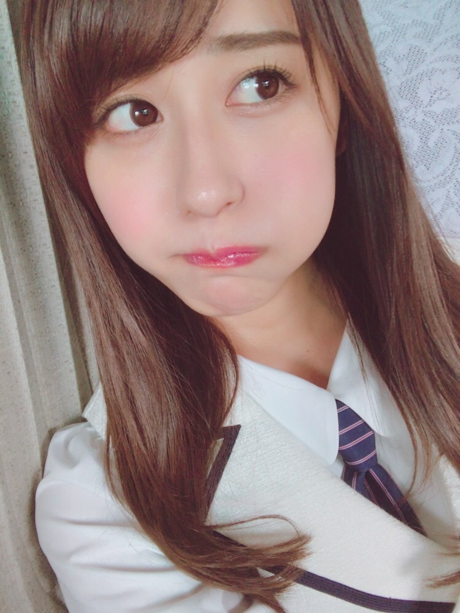
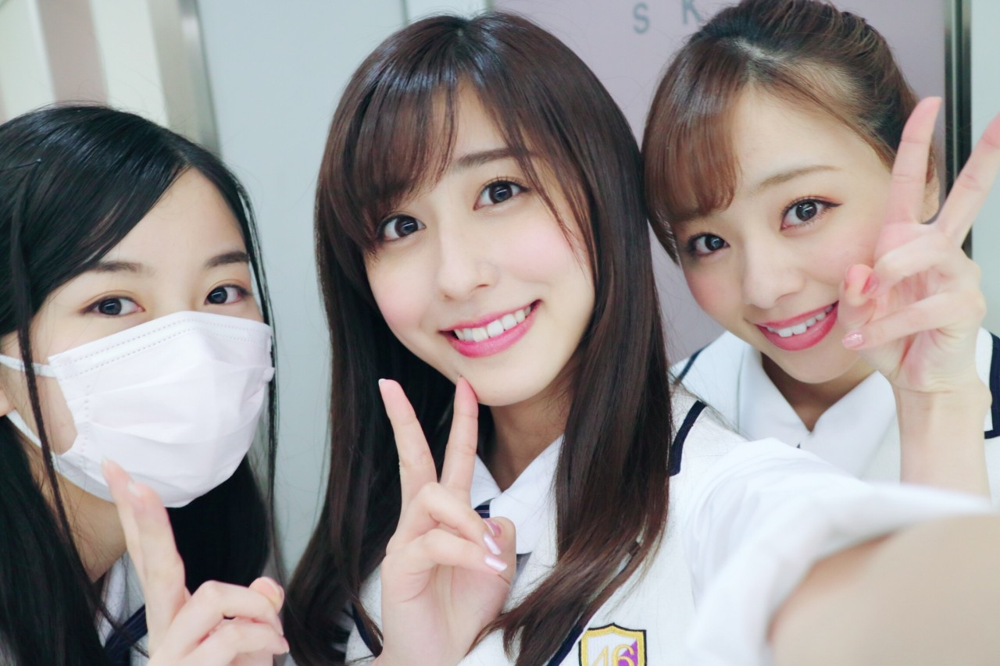

| 2017/04 01 Sat | プク。 |
ちはるーむへようこそ
今日のちはるーむではあったかいココアを飲んで暖まりました。
今日は新年度を迎えた日。
エイプリルフール。
罪のない嘘をついていい日でした。
ちなみに嘘をつけるのは午前中で
午後はそれを嘘でした〜と告白する時間らしいです！国によってですが...
ついた嘘は一年間叶う事ないんだって！
皆さん変な嘘ついてませんか〜？ᐠ( ᐝ̱ )ᐟ
私は家族に嘘つきました！
みんなにメールで、
歯が痛い！と、顔が腫れた写真(加工したもの)を送ったんだ〜笑
そしたら信じてくれた！
エイプリルフール大成功でした♡
心配されちゃったことに対しては罪悪感感じたけど...(> <)
１年に一度のドキドキ感だからいいんだろうね〜

ちなみにこのプク顔くらい腫れた写真を送ったんだよ〜笑
皆さんはどんなエイプリルフールをお過ごしでしたか？
そして今日は17th初めての全国握手会。
久しぶりの大阪での開催でした
ミニライブ含め、握手会に
来てくださった皆さんありがとうございましたm(_ _)m
私は琴子と一緒に17レーンでした！
体調不良になった生駒と同じレーンだった
真洋も一緒に途中から17レーンになり、
３人体制になりました◎

今日残念ながら来れなかった方は
名古屋、東京でも開催されますので
是非お越しください！
また、ミニライブでは風船は生きているの
初披露でした！
どうだったでしょうか！？☺︎
踊っていて楽しくて、のびのび出来ました。
12人、今日は愛未がいなくて11人でしたが
選抜や三期生に負けないように
みんなで力を合わせて頑張りたいと思います(﹡ˆ ˆ﹡)
アンダーライブの当落発表が
今日だったみたいですが...
どうでしたか？(>

------------------------------------------------♡
♬ ChihaMusic
「さよならの前に」AAAさん
千晃さんが卒業してしまい
もう全く同じ音は聞けないと思うと
余計に寂しく感じます。
寂しくて切なく甘い曲。
皆さんのハモリや声の感じが
曲調にぴったりで素敵だな〜
"終わりが怖いなら始めなければいいと
出逢う前の僕らなら信じてたね
疑いもせずに"
この歌詞が好き。
何事もチャレンジしなきゃ
どんな事が起こるかなんて分からないんだから。
こちらは両頬とも膨らませました。
全力プク顔。
皆さんいつもコメントありがとうございます♡
嬉しいです(o^^o)
おやすみ
斎藤ちはる
コメント(357)
2017/04/01 21:30